GolAberto — The Open Football Statistics Encyclopedia
An open football archive in Portuguese, Spanish, and English covering championships, phases, groups, qualification zones, match line-ups, referees, stadiums, and live-recounted standings tables across South American and world football. Latest product brief ↓
2026-11-10 — Archive verification catches transfer and memory limits
The native runtime now sorts outputs once and publishes by ordinal ranges. Ratings and odds read pages bounded by both rows and bytes, retaining the existing numerical input limit. DuckDB uses one execution thread under its 512 MiB engine budget. These changes address full-archive failures without changing the calculation window or WASM algorithm.
Player-statistics publication checked 302,234 rows, updated 357 and deleted none; standings also published. Fifteen native runtime tests, eleven focused numerical tests, the app build/test and forty browser-verifier tests passed. A synthetic one-million-row publication materialization completed under the engine budget; it does not prove full-archive publication.
Private VM image sha256:6e7bf34327b5305aa49a74e2a3e8b797ce206f4985716d2d80720f63729985aa passed HTTP verification: 298 assets, six catalogues, seventeen routes and the negative cache probe. Its container remains capped at 3 GiB. Retained inputs survived replacement; the version guard refused an intermediate image whose active bundles had not been updated.
The Teams page rendered forty rows without pulsing during archive computation. This screenshot verifies concurrent serving, not new ratings publication.
Game-card replay and atomic publication completed in 992 seconds, checking 318,970 game cards and 637,940 team-game rows with no changes to existing rows. Ratings and odds publication remain under verification. The live statistics test timed out waiting for its baseline behind archive computation; its fixtures were removed, and the run verified 41 screens. This is not mutation/rollback proof. A subsequent numerical paging change uses up to 4,096 candidate rows under the same 1 MiB limit; a 40,000-row read fell from 314 queries/about 550 ms to 11 queries/about 55 ms. All eleven focused tests and the app build/test passed. Image sha256:885030adf6ec40fd2b9fd1ca615d6c0953034b02719f5f36212297421d0f7f51 is deployed with the retained ratings capture and numerical cache. The public hostname still serves Cloudflare. Main was merged cleanly into the PR; checks run again on new commits.
2026-11-09 — Native DuckDB keeps the archive out of job JSON
Golaberto's DuckDB snapshot engine now keeps immutable captured relations and computation outputs in persistent files. Durable jobs retain manifests. Workers consume bounded pages, and PostgreSQL stages pages before one atomic publication.
The original full-archive game-card path exceeded JavaScript's string limit. The bounded capture completed in 142 seconds. After interrupting calculation, a new process reopened that capture and completed calculation in 243 seconds. Another 148 seconds drained 318,970 game-card rows in 2,492 pages and 637,940 team-game rows in 4,984 pages. This measurement excludes PostgreSQL publication.
Review fixes deny worker SQL access to host files and remove output artifacts after failed calculation or publication while preserving replay inputs.
The private GCP VM runs image sha256:ad7e73ab1e9029641c06cf9b6354b7d4888f755e20f639466acf2f0a80331ee1 with a persistent DuckDB volume. HTTP verification passed 298 immutable assets, six catalogues and 17 document routes.
Follow-up review closed a query-bounds race: sizing and retrieval now read one materialized result. Capture conversion considers up to 4,096 rows under the existing byte budget. A local 100,000-row benchmark improved from 2.446 to 0.689 seconds; this is not a whole-pipeline speedup. Build, app tests, all 14 runtime tests and focused lint passed.
The first VM standings publication checked 58,440 rows and updated four in 1,204 seconds. The latest image was deployed with all persistent volumes preserved; its HTTP verification passed in 11.5 seconds. The uncommitted game-card capture restarted with the faster converter. Full archive bootstrap remains unfinished.
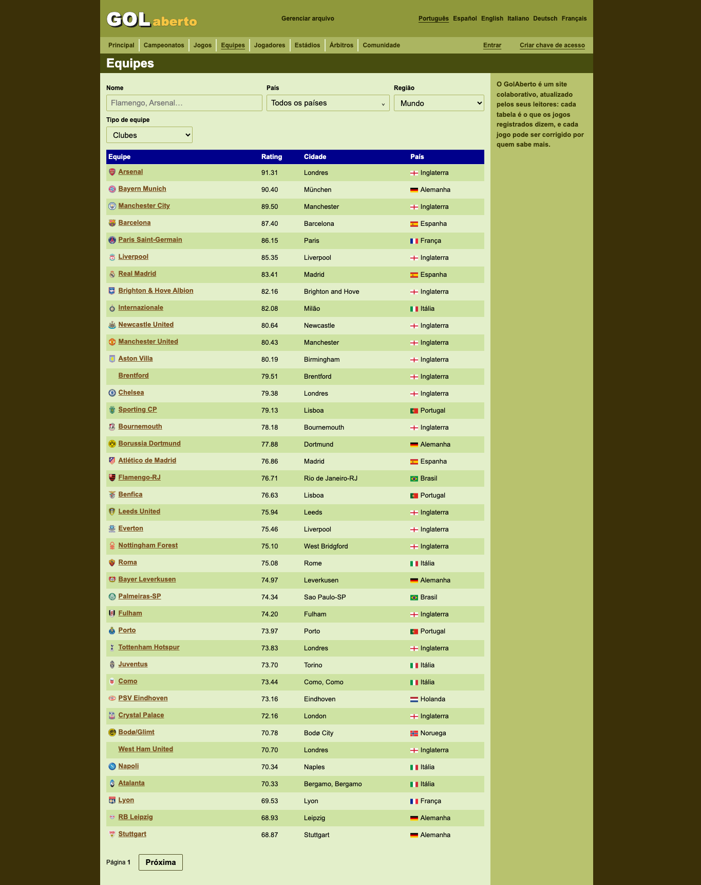
The teams page loaded forty rows without pulsing while background computation ran. These are previously published statistics; this screenshot does not prove new statistics publication.
Snapshot copying and SQL still repeat for each batch. This is bounded data transfer, not incremental view maintenance. The public hostname remains on Cloudflare; full bootstrap publication and live mutation/rollback verification are pending.
DuckDB VM trial: bounded archive execution is still required
Golaberto now selects DuckDB snapshot execution while retaining its Feldera SQL,
pure WASM algorithms, durable batching, and transactional publication. The public
Cloudflare site has not changed.
Generation, lint, build and app tests passed. The focused runtime suites passed
22 capture/computation tests and 21 batching tests, including transaction-consistent
capture, coalescing, rollback and retained-input recovery. The AMD64 appliance
built in Depot as csp0kvq0cd and started privately on the GCP VM.
The complete archive exposed a native runtime limitation: game-card capture
materializes all query results in JavaScript, then fails with
RangeError: Invalid string length in strictJson(inputs).
An 8 GiB diagnostic VM made this failure observable; it did not solve it.
The existing bounded application steps are not yet used by this execution path.
Browser mutation verification failed while waiting for statistics. Its five
created disposable fixture rows were subsequently removed in a guarded PostgreSQL
transaction; no live-update or rollback-browser success is claimed. Failing
appliance retries were stopped. Public release remains pending bounded execution.
Native streaming VM: the archive stays available during bootstrap
The private GCP VM serves Teams while precompiled Feldera pipelines rebuild streaming state. HTTP verification and the appliance checks pass; live mutation and rollback verification remain pending.
The Cloudflare reader now retains a pristine physical baseline. After bootstrap, a new capture transfers changed database blocks instead of copying the whole archive. Local materialization writes are discarded before applying the next image; source baselines stay pinned until the reader acknowledges completion.
A real-PGlite workerd test transferred 81,485,919 bytes initially and 8,192 bytes for the next committed capture. Both input tables retained the captured revision even after the source advanced. Restarting after an applied delta block preserved progress; abandoning a partially applied capture, retrying its release, and replacing it also produced the correct rows. These are local transfer measurements, not hosted latency results.
The focused runtime suite passed 31 tests, and raw and compressed storage validation passed. Logical input loading into DuckDB, batch computation and output publication remain separate costs. This transport change has not yet been deployed.
Live statistics, navigation and SofaScore in one Cloudflare release
The combined branch published the prepared archive and the SofaScore container to golaberto.bonisoft3.com. The publisher verified 3,045 chunks across 1,648 files (7,077.6 MiB), after applying 36 pending migrations to a copy of the archive. The original migration ledger remains intact.
Review caught an omitted fixture-availability field that rejected cards publication, and an HTTP-200 body-read failure being treated as a successful SofaScore acquisition. Both are fixed. Generation, lint, build and the full app tests passed. Worker 092c7eab-d0cf-4b92-a445-701190d656c3 deployed the cards fix without resetting the database.
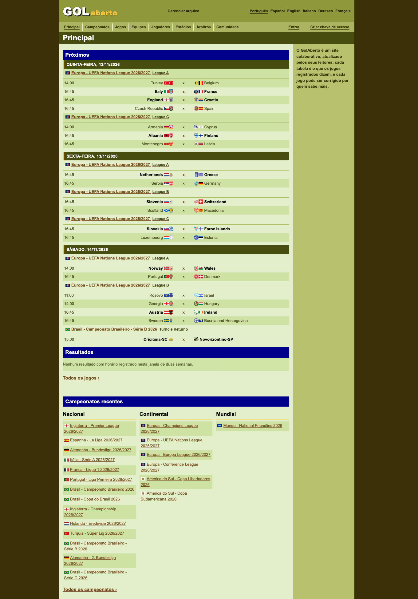
The combined release homepage hydrated without page errors.
Worker d2144183-1f53-4bb0-acba-ac79e3bec300 subsequently published the lock-order migration. Hosted HTTP verification passed 455 assets, six catalogues, 24 document routes and the negative caching probe. The ordinary browser sweep passed all 41 journeys and screens. The live statistics verifier then observed goals change from 0 to 1 without reload after inserting a match. The browser also observed the restored statistics without reload after rollback, and the disposable fixture was removed. The slow full-archive path is not a low-latency result. This longer verification run subsequently failed its browser sweep on Electric HTTP 500 responses and screen readiness timeouts; the complete verification is not green.
Before the live test match.The same browser page received the published statistics through synchronization.The same page observed the rollback publication.
Follow-up review: local checks pass, hosted hydration blocks verification
PR #2325 carries the bounded edge computation and hosted standings verification follow-up. The independent runtime review found no actionable issue. QA identified that automatic fixture recovery excludes partial cleanup; that documented limit remains.
Doctor, generation, lint, build and the complete app test command exited successfully. The Docker replay gate passed; remaining integration gates and CI were still running when this entry was written. Two verification commands were corrected to resolve dependencies through the pinned Pronto runtime.
The deployed site passed 382 immutable asset checks, six catalogues, 24 document routes and the negative cache probe. Browser verification failed: all 16 visited screens timed out, and seven additional routes could not be resolved. A homepage probe rendered populated content with no page exception, but retained data-served after boot while POST /auth/guest remained pending. Its backend cause is not established. No new mutation or rollback proof was obtained.
The visible server-rendered homepage is not evidence of a functioning live subscription.
Locating the cost of archive standings updates
The earlier 42-minute hosted transition spent roughly fourteen minutes copying a 7.6 GB physical database, fourteen loading source rows, nine finishing standings, and the remainder in SQL and publication. Coalescing does not remove this per-capture full-snapshot work.
A local Workerd/DuckDB experiment transferred 16,384 narrow rows in 16 data pages and 286 ms, versus 128 data pages and 1,028 ms, with the same 28 MiB WASM heap. Source pages now allow 1,024 rows under the existing 256 KiB byte ceiling; insertion sub-batches and output bounds remain unchanged. Alarm-local acknowledged progress removes redundant status calls, and completed physical readers skip their file-cursor scan.
This is local performance evidence, not a new hosted latency result. The new companion runtime has not replaced the retained live ratings computation. Full snapshot copying, ranking cost and the source-side memory-pressure cause remain unresolved. Benchmark and sampled stage evidence.
Standings update and roll back in the open browser tab
A disposable Cyprus–Latvia match changed the hosted standings from zero goals to one and back to zero after deletion, without a page reload. The original archive match was untouched and all six fixture records were removed. The forward update took 42m01s; rollback took 42m23s. This proves eventual live publication, not low-latency statistics.
Before insertion · 09:45:42 UTC
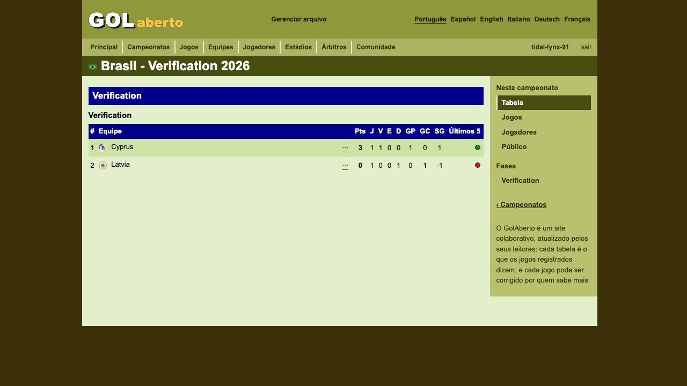
Live update · 10:27:44 UTCCompensating rollback · 11:10:09 UTC
Bounded retries now recover read-only shape and entity requests after marked Durable Object resets. Real Workerd restart tests passed, and the authenticated 41-screen sweep passed on the final deployment. A real memory-limit reset recovered during the mutation proof; its memory cause remains unresolved. Ratings, odds and monthly rollover were not validated by this case. Version-scoped verification evidence and limitations.
5 November 2026 — Durable computations verified with Docker restored
Golaberto's full generation, lint and test gates passed. The rebuilt PGlite includes pg_ivm. Real Feldera CDC recovery passed; all fifteen portable types round-tripped through PostgreSQL and DuckDB. The final compute suite passed 166 tests, with two opt-in tests skipped; native CDC was also run separately.
Fixed the merged durable isolation guard, restart scheduling of retained work, the narrow compiler fingerprint upgrade, Durex migration parsing, and a Cloudflare reset response that could be cut off by restarting its Durable Object. Thirteen actual Workerd compute/migration tests and the deterministic reset regression passed. The isolated compiler image also builds after routing its cross-package sink-column test to the repository gate; all 17 Duckstream compiler contract tests passed. Independent reviews found no remaining issues in these repairs.
Plausible additionally demonstrated live PostgreSQL → Feldera → durable computation → Electric → browser replay without reload. Validation evidence. CI remains the merge gate. This was local validation, not a production deployment; large monthly edge publication and a hosted Golaberto match-edit flow remain unproved.
Live statistics meet the current runtime
The Duckstream branch now combines the current app and framework changes with isolated Cloudflare rendering and computation, durable publication, and the monthly seven-year ratings window. The merge preserves progressive rendering, deployed secrets, private-data exclusions and reconciliation migrations. Generated Cloudflare releases now apply the archive storage and CPU policy before publication, while GCP and Kubernetes retain their release commands.
Focused checks passed across synchronization, computation snapshots, SQL generation, renderer RPC lifetime and release packaging. GolAberto’s 27 Duckstream tests and Plausible’s 18 passed. Pronto generation and app lint ran; the full generation entry point remains blocked because Docker cannot start the pinned Feldera compiler. Workerd retention also needs a fresh PGlite build with pg_ivm.
This is source integration, not deployment acceptance: no new hosted playtest or screenshots were captured. Gate results and remaining limits.
Keeping hypothetical event identities distinct
A match scenario keeps its existing events editable when it reaches the last available event identifier, and explains why it cannot add another. On the running archive, a goal was added normally; the tab-local sequence was then set to its maximum to exercise the otherwise remote boundary. A second add left the single event in place.
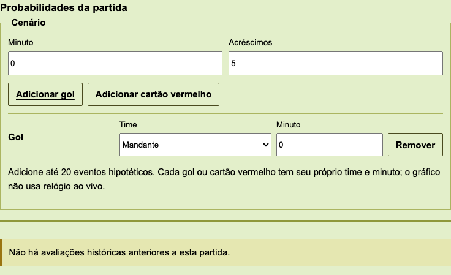
One goal added normally
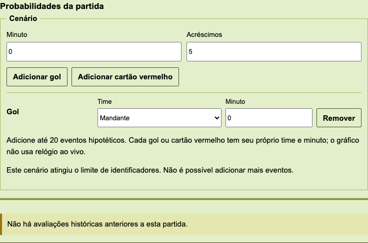
After setting the tab-local sequence to its maximum
Generation, lint, build and test passed. The mounted test also creates the final available identifier and rejects a duplicate. Replay and visual integration passed; full integration reported a language-page readiness timeout, while the same language case passed alone against the live seeded archive.
Archive link targets and fresh database fixture
Shared championship headings, side navigation, table cells, home championship lists and scorer links now have the existing 24px minimum target height. Fresh fixtures also include all 885 unambiguous, active 2026 archive player statistics.
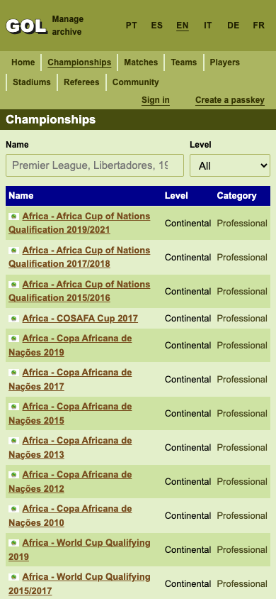
Catalog · Before
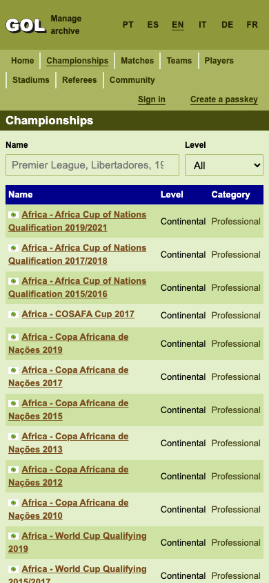
Catalog · After
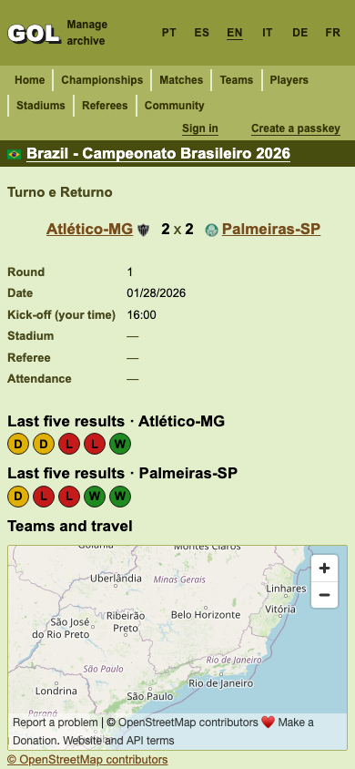
Match · Before
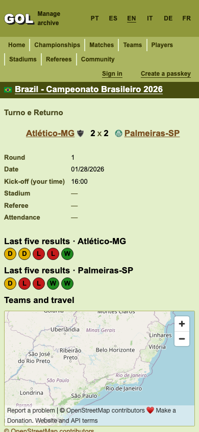
Match · After
Stable filters, usable links, and a chart that keeps its space
Authentication buttons, facts and community links, and fixture links now keep the 24px target floor. The championship page imports its shared standings styles, odds selection uses visible native radio controls, and the rating chart keeps its plot, caption, and legend space during hydration.
Tablet route
Before CLS
After CLS
Game archive
0.23747
0.00055
Team profile
0.16101
0.00348
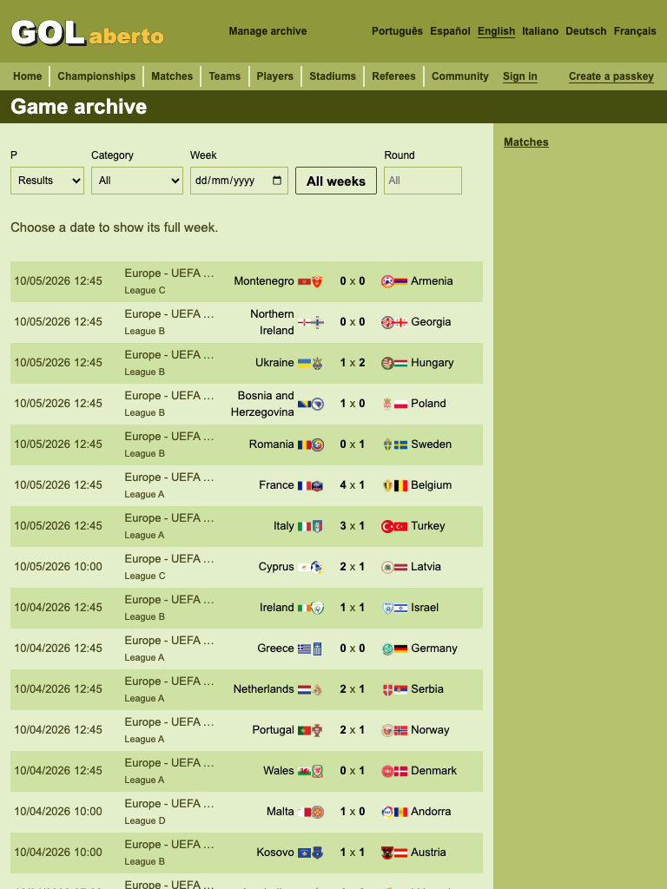
Archive filter · Before
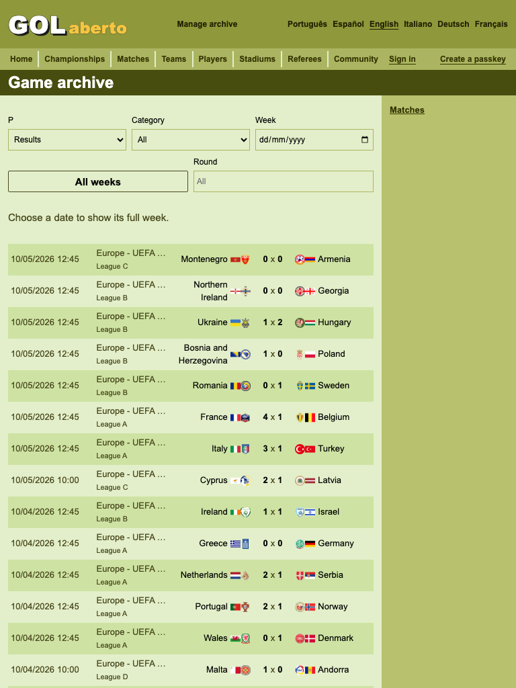
Archive filter · After
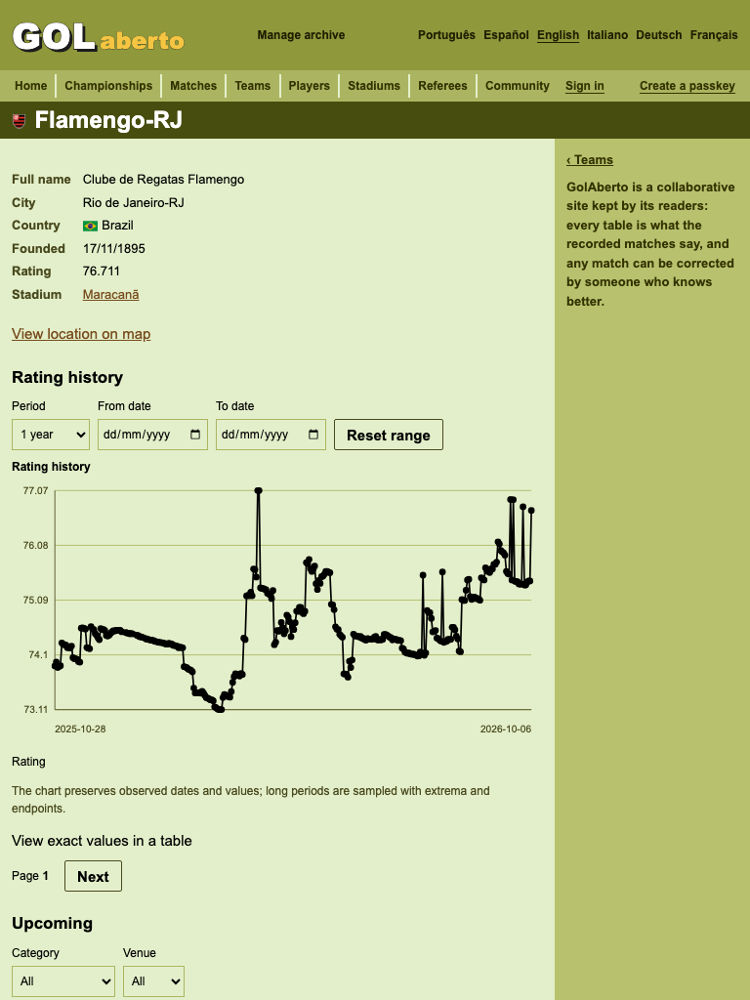
Team rating chart · Before
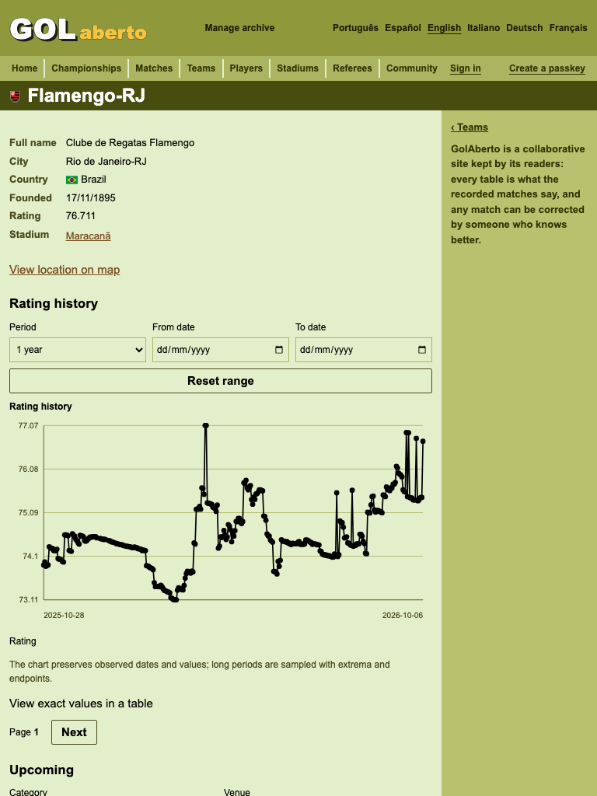
Team rating chart · After
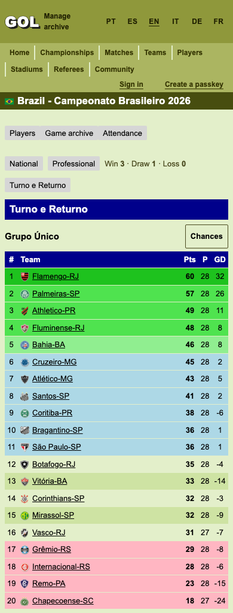
Phone standings · Before
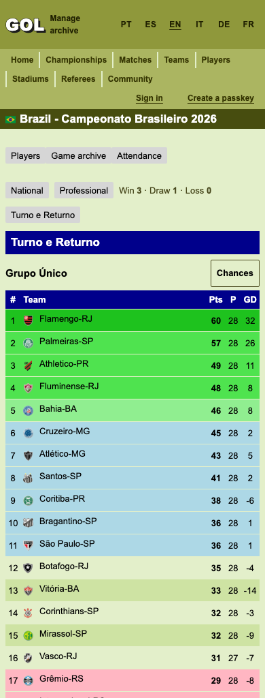
Phone standings · After
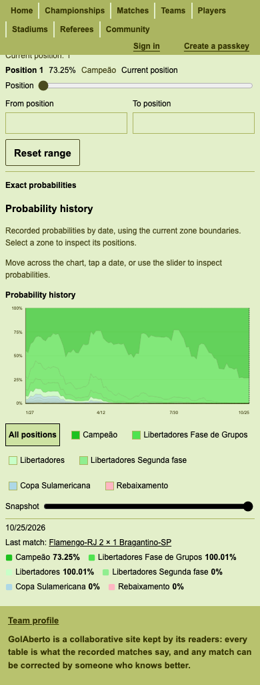
Odds controls · Before
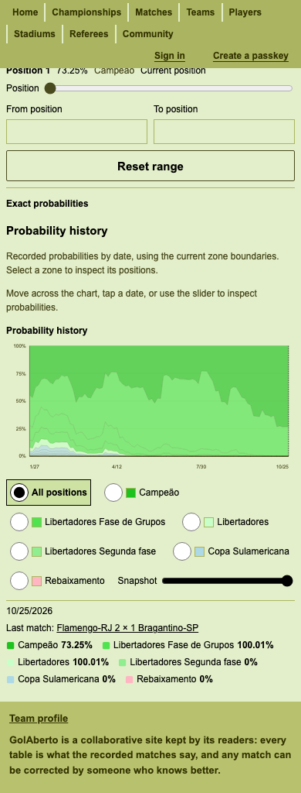
Odds controls · After
Matches open near today, section date bars, and stacked probability timeline
Upcoming matches start at seven calendar days before today in Brasília with Previous/Next archive navigation, reader-timezone formatting, distinctive dark olive date section headings, and stacked Poisson win/draw/loss probability polygons with pointer-following score and event annotations.
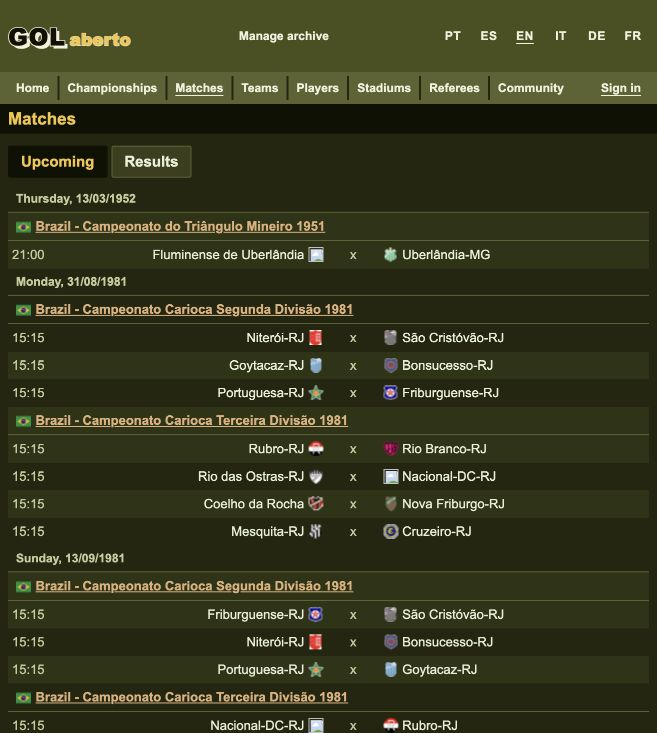
Matches default · Before
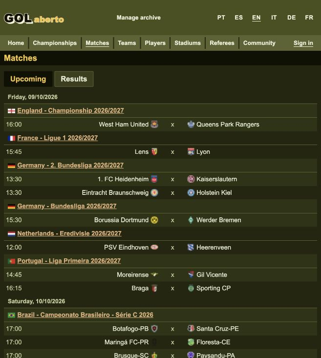
Matches default · After
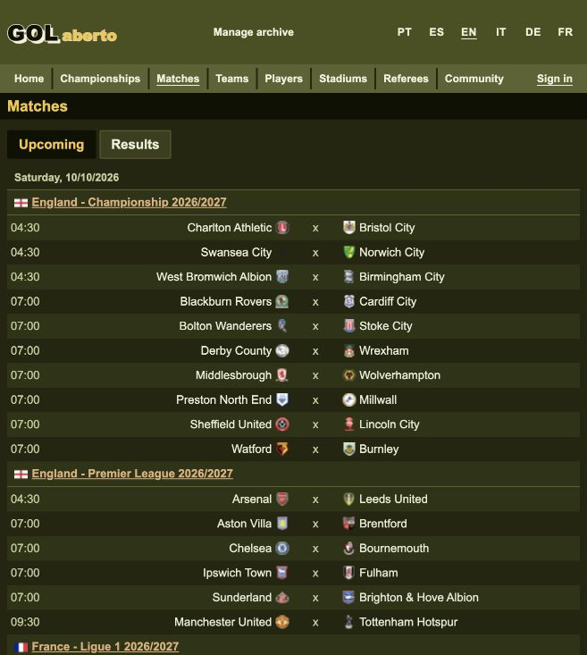
Date heading · Before
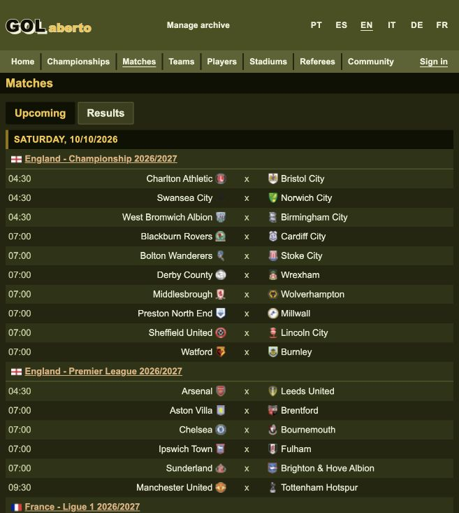
Date heading · After
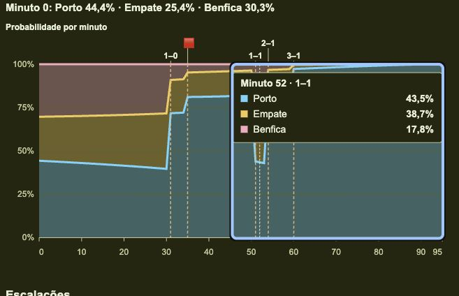
Stacked probability & timeline annotations
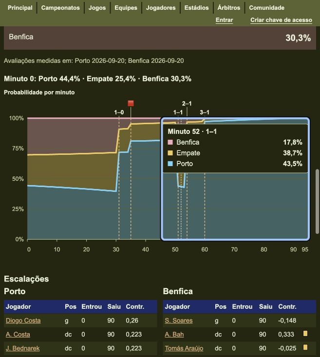
Legend ordered away-first to match stacked areas
GolAberto
GolAberto is an open database of football: every championship, its phases and groups, every game with its goals and line-ups, and the tables those games make. Nothing a reader sees is typed twice: a table is what its games say; a player's goals are the goals recorded in games; a referee's record is the games he whistled.